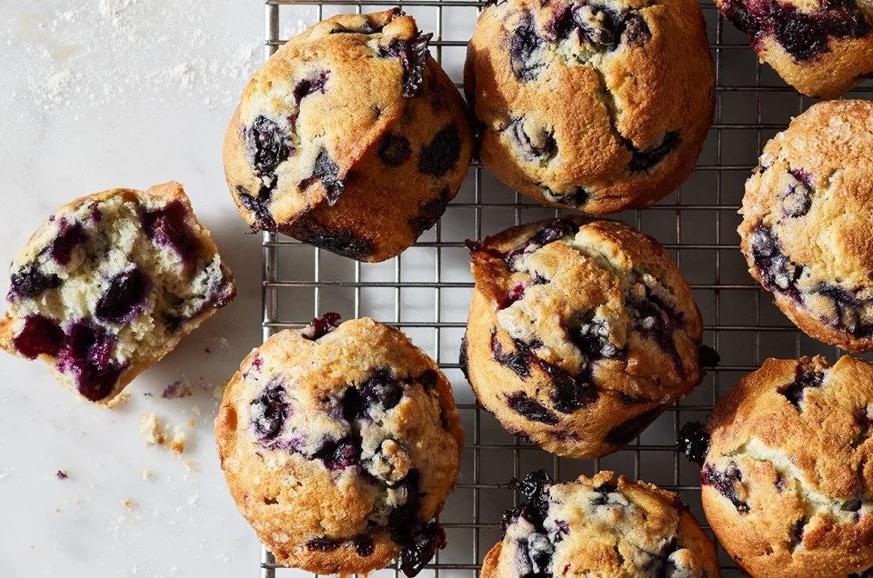

How to make scumptious blueberry muffins
Jump to the tutorial
Every Sunday morning, the kitchen would fill with the sweet aroma of homemade blueberry muffins, a recipe passed down through generations. As a little girl, the tradition was to sneak bites of the warm muffins as they cooled, always caught but never scolded. Years later, with children of her own, the tradition continued, with little hands helping to pick fresh blueberries from the backyard. When the time came that the family matriarch could no longer bake, the next generation learned the recipe, ensuring that the beloved Sunday ritual would live on, always with a pinch of love and patience. Love you Grandma. She used to say "muffins are better friends than some people." as she baked them, I miss her o(╥﹏╥)o.

Tips from the expert(me)
- Toss Blueberries in Flour: before adding them to the batter, toss them in a tablespoon of flour. This helps prevent the berries from sinking to the bottom of the bottom of the muffin and distrubtes them more evely throughout.
- Use Room Termperature Ingredients: Do NOT put any of them in the microwave, I'm so serious when I say this. Your egg, butter, and buttermilk. Everything would workout better if it's in the room temperature.
- Check for Doneness: Just 5 minutes before its due time, get it out and insert a toothpick into the center of one. If it comes out clean or with a few moist crumbs. Don't overbake, it's gonna be dry and flakey.
- Do Not Thaw the Berries: If you let them thaw, the berries will make the batter blue. If using frozen berries, reduce the mixing time a little to avoid too much color transfer. Well if you like the blue color then go ahead, but remember not to overmix.
- Don't Overmix the Batter: If you like dense and tough muffins, well sure do it. However, if you don't, stir the wet and dry ingredients until it's just combined. It is OKAY if there are a few lumps.
Ingredients
| Category |
Ingredient |
Amount |
| Dry Ingredients |
All-purpose flour |
2 cups |
| Granulated sugar |
3/4 cup |
| Baking powder |
2 teaspoons |
| Baking soda |
1/2 teaspoon |
| Salt |
1/2 teaspoon |
| Wet Ingredients |
Unsalted butter (melted) |
1/2 cup |
| Large egg |
1 |
| Buttermilk (or milk as an alternative) |
1 cup |
| Vanilla extract |
1 teaspoon |
| Other Ingredients |
Fresh or frozen blueberries (tossed in flour) |
1 1/2 cups |
| Optional: Sugar (for sprinkling) |
1 tablespoon (optional) |
Instructions
- Preheat the oven: Preheat to 375°F (190°C) and line a 12-cup muffin tin with paper liners or grease the tin lightly.
- Mix the dry ingredients: In a large bowl, whisk together the flour, sugar, baking powder, baking soda, and salt.
- Combine the wet ingredients: In another bowl, whisk together the melted butter, egg, buttermilk (or milk), and vanilla extract.
- Combine wet and dry ingredients: Pour the wet mixture into the dry ingredients and stir until just combined. Don’t overmix; it’s okay if the batter is a little lumpy.
- Add blueberries: Gently fold in the blueberries, making sure they are evenly distributed.
- Fill the muffin cups: Scoop the batter into the muffin cups, filling each about 2/3 full.
- Optional topping: Sprinkle the tops with a little sugar if desired.
- Bake: Bake for 18-22 minutes, or until a toothpick inserted into the center comes out clean.
- Cool: Let the muffins cool in the tin for a few minutes before transferring them to a wire rack to cool completely.
- Serve: Serve warm and enjoy!